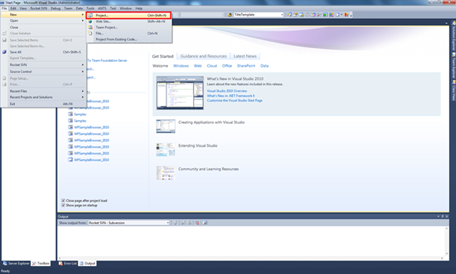
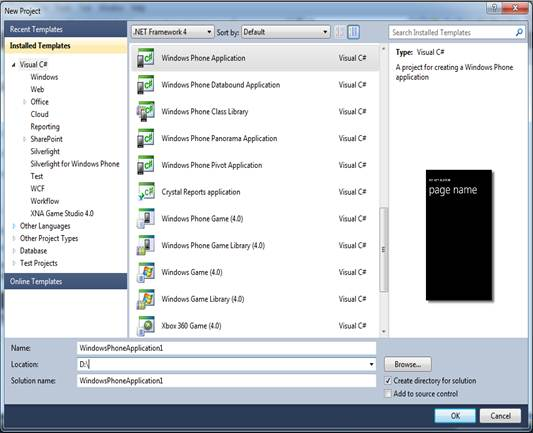
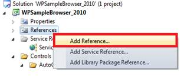
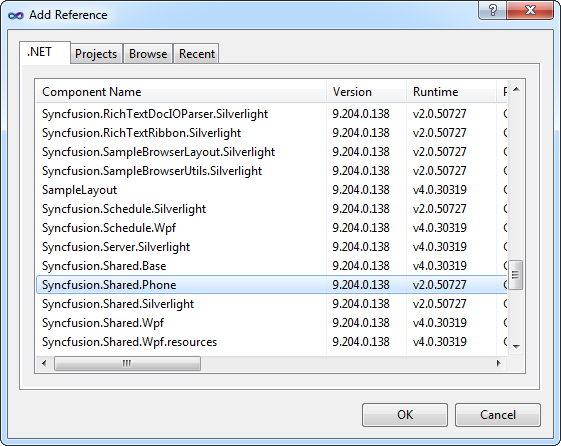

This section provides step-by-step instructions for creating a Windows Phone application and deploying Tools controls in the application.
This procedure is elaborated in the following sections:
9. Creating a Windows Phone Application
10. Deploying Essential Tools to the Application
Creating a Windows Phone Application
1. Open Microsoft Visual Studio. Go to File menu and click New > Project.

Figure 8: Creating a Windows Phone Application
2. In the New Project dialog, select Windows Phone Application template, name the project and click OK.

Figure 9: new project dialog
3. A new Windows Phone application is created.
Deploying Essential Tools to the Application
1. Go to Solution Explorer. Right-click References folder. Context menu opens.
2. Click Add Reference.

Figure 10: Solution Explorer window
3. Add the following assemblies to the project References folder.
· Syncfusion.Shared.Phone.dll

Figure 11: Add Reference
4. Add Syncfusion.Shared.Phone reference in XAML or C# code as follows.
|
[XAML] xmlns:tools="clr-namespace:Syncfusion.Phone.Tools.Controls;assembly=Syncfusion.Shared.Phone"
|
|
[C#]
using Syncfusion.Phone.Tools; |
Essential Tools controls are deployed in your application.
Refer to the getting started sections of all the controls in this user guide to know how to add the individual control to this application.